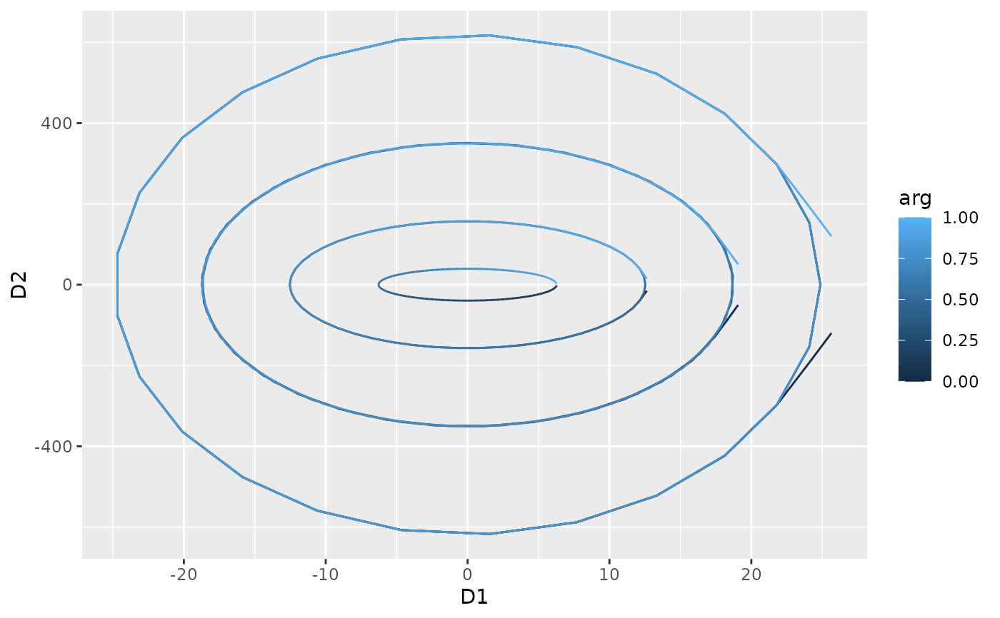
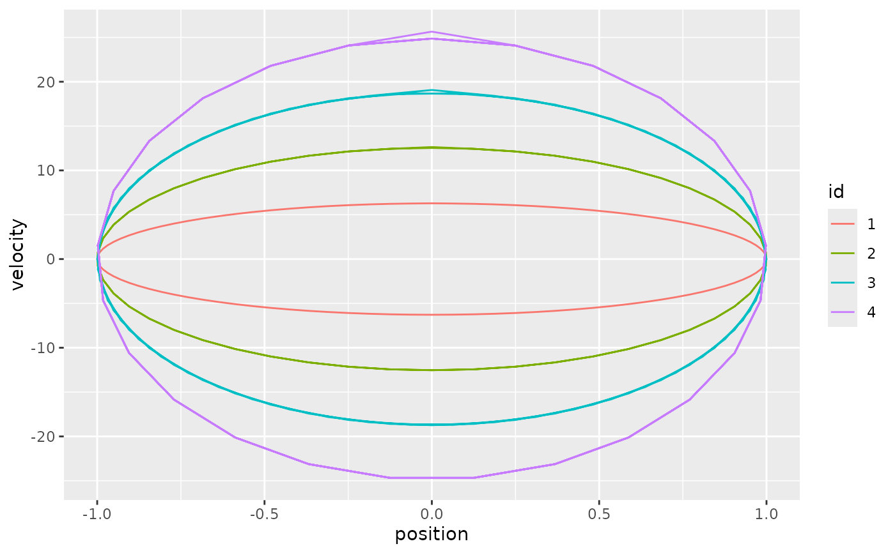

Turns a univariate tf vector into a two-component tf::tfd_mv() /
tf::tfb_mv() object holding two derivatives of each function, so that
the curves can be displayed as trajectories in the plane spanned by these
derivatives – a phase-plane plot like fda::phaseplanePlot().
By default, the first derivative (velocity, on the horizontal axis) is
paired with the second derivative (acceleration, on the vertical axis).
Use order = c(0, 1) for the classical phase portrait of position vs.
velocity.
Usage
tf_phaseplane(f, order = c(1L, 2L), arg = NULL)Arguments
- f
a univariate
tfobject (tfdortfb)- order
integer vector of length 2: the derivative orders shown on the x- and y-axis. Defaults to
c(1, 2)(velocity vs. acceleration);0means the function itself. Maximal order fortf::tfb_spline()objects is 2.- arg
optional grid on which to evaluate the derivatives (and, for
order0, the function itself); defaults tof's own grid, seetf::tf_derive().
Value
A two-component tf_mv object (tfb_mv for tfb input if both
components can be represented in basis form and no arg is given,
otherwise tfd_mv) with components named "D<order>", e.g. "D1" and
"D2".
Details
Derivatives are computed with tf::tf_derive(), i.e. by finite differences
for tfd objects. Since differencing amplifies noise, phase-plane plots of
raw data are usually only informative for smooth functions (e.g. a
tf::tfb() representation, or tf::tf_smooth()ed data) on a fine grid.
The result is a regular tf_mv object, so it can be plotted with
tf_ggplot() (map it with aes(tf = ...) and add ggplot2::geom_path())
or autoplot(). Use aes(colour = .arg) or colour_by_arg = TRUE to
colour the trajectories by their argument value, which is otherwise not
visible in a phase-plane plot.
See also
autoplot.tf_mv(), tf::tf_derive()
Other tidyfun visualization:
autoplot.tf(),
autoplot.tf_mv(),
ggcapellini,
gglasagna(),
ggspaghetti
Examples
library(ggplot2)
arg <- seq(0, 1, length.out = 101)
# sinusoids of varying frequency: the phase plane shows nested ellipses
f <- tfd(t(sapply(1:4, \(k) sin(2 * pi * k * arg))), arg = arg)
pp <- tf_phaseplane(f)
pp
#> tfd_mv<d=2>[4] (D1, D2): [0, 1] -> [-24.67289, 25.65029] x [-617.2462, 617.2462]
#> components based on 101 evaluations each, interpolation by tf_approx_linear
#> [1]: ▅▅▅▅▅▅▄▄▄▄▄▃▃▃▃▄▄▄▄▄▅▅▅▅▅▅ | ▄▄▄▄▄▄▄▄▄▄▄▄▄▅▅▅▅▅▅▅▅▅▅▅▅▅
#> [2]: ▆▆▅▄▃▃▂▃▃▄▅▆▆▆▆▅▄▃▃▂▃▃▄▅▆▆ | ▄▄▄▄▄▄▄▅▅▆▅▅▅▄▄▄▄▄▄▅▅▅▆▅▅▅
#> [3]: ▇▆▄▂▂▂▄▆▇▇▅▃▂▂▃▅▇▇▆▄▂▂▂▄▆▇ | ▄▃▂▃▅▆▇▆▅▃▂▃▄▅▆▇▆▄▃▂▃▄▆▇▆▅
#> [4]: █▅▂▁▃▆█▇▃▁▂▅██▅▂▁▃▇█▆▃▁▂▅█ | ▃▁▂▅██▅▂▁▄▇█▆▃▁▂▅█▇▄▁▁▄▇█▆
#>
autoplot(pp, colour_by_arg = TRUE)

# position vs. velocity, with tf_ggplot:
d <- data.frame(id = factor(1:4))
d$f <- f
tf_ggplot(d, aes(tf = tf_phaseplane(f, order = c(0, 1)), colour = id)) +
geom_path() +
labs(x = "position", y = "velocity")
